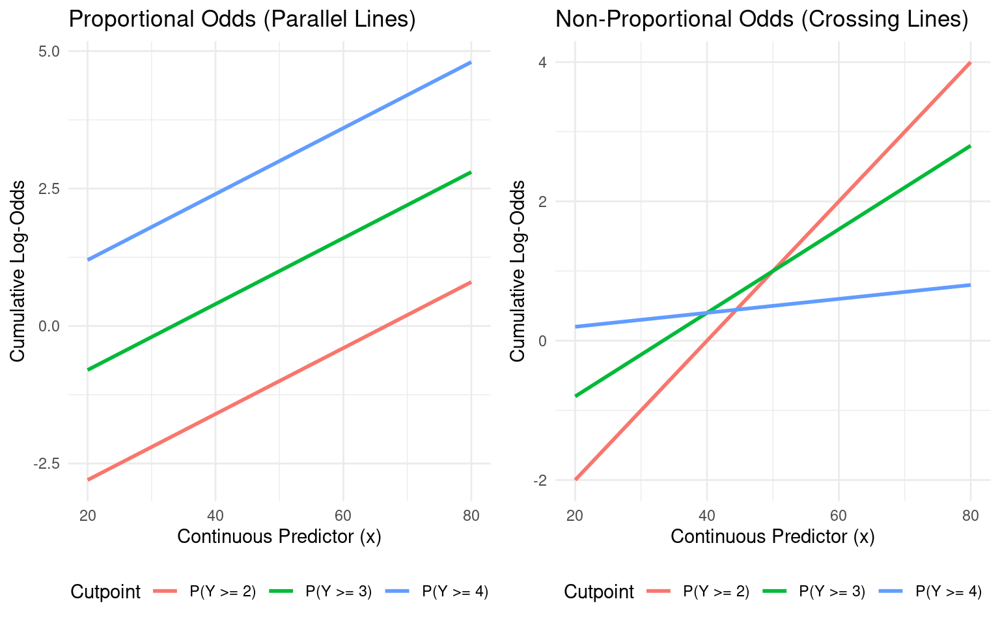
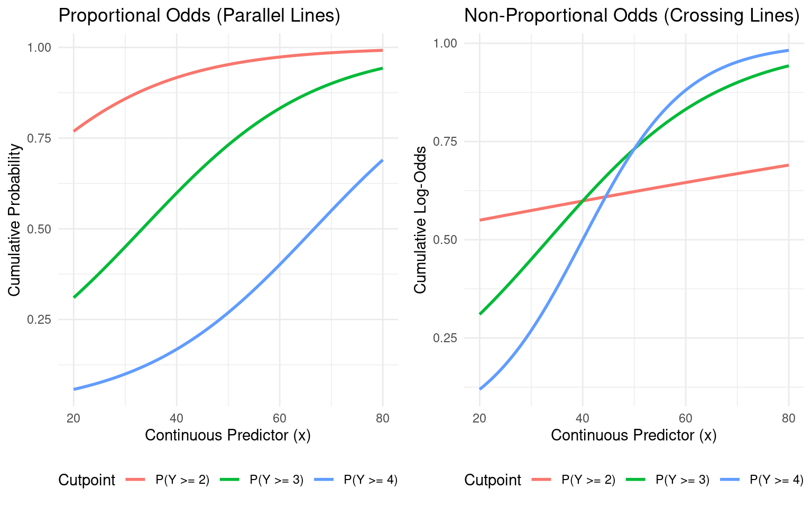

Code
library(rms)
library(nnet)
library(ggplot2)
library(rstanarm)
library(knitr)
library(kableExtra)March 26, 2026
library(rms)
library(nnet)
library(ggplot2)
library(rstanarm)
library(knitr)
library(kableExtra)These notes supplement Set8.pdf, which is the primary reference for multinomial and ordinal regression models including model formulation, interpretation, and examples which are implemented in Stata. The purpose of these supplementary notes is to:
Students should read Set8.pdf first and treat these notes as a companion.
We reproduce the data from a study cross-classifying diabetes status with coronary heart disease (CHD) outcome category. The three CHD categories are myocardial infarction (MI), angina, and no CHD.
# Enter the data as a matrix
chd_table <- matrix(c(16, 7, 56,
75, 57, 524),
nrow = 2, byrow = TRUE,
dimnames = list(Diabetes = c("Yes", "No"),
CHD = c("MI", "Angina", "No CHD")))
kable(chd_table, caption = "CHD Outcome by Diabetes Status") |>
kable_styling(bootstrap_options = "striped", full_width = FALSE)| MI | Angina | No CHD | |
|---|---|---|---|
| Yes | 16 | 7 | 56 |
| No | 75 | 57 | 524 |
Before examining specific comparisons, we first test whether there is an overall association between diabetes status and CHD category. There are several approaches to this test, and we demonstrate three here.
Pearson chi-squared test:
chisq_test <- chisq.test(chd_table)Likelihood ratio and Wald tests from the multinomial model:
We can also obtain overall tests directly from the multinomial logistic regression model. The likelihood ratio test compares the fitted model to the intercept-only (null) model. The Wald test jointly tests whether all coefficients for diabetes are simultaneously zero.
# Create individual-level data from the table
dat <- data.frame(
diabetes = factor(rep(c("Yes", "No"), times = c(79, 656)),
levels = c("No", "Yes")),
chd = factor(c(rep("MI", 16), rep("Angina", 7), rep("No CHD", 56),
rep("MI", 75), rep("Angina", 57), rep("No CHD", 524)),
levels = c("No CHD", "MI", "Angina"))
)
# Fit multinomial logistic regression
fit_multinom <- multinom(chd ~ diabetes, data = dat)# weights: 9 (4 variable)
initial value 807.480032
iter 10 value 481.418200
iter 10 value 481.418199
final value 481.418199
converged# Fit null (intercept-only) model
fit_null <- multinom(chd ~ 1, data = dat)# weights: 6 (2 variable)
initial value 807.480032
final value 483.691784
converged# Likelihood ratio test
lr_stat <- deviance(fit_null) - deviance(fit_multinom)
lr_df <- abs(fit_null$edf - fit_multinom$edf)
lr_p <- pchisq(lr_stat, df = lr_df, lower.tail = FALSE)
# Wald test
# Coefficient estimates and standard errors for diabetes
beta <- coef(fit_multinom)[, "diabetesYes"]
se <- summary(fit_multinom)$standard.errors[, "diabetesYes"]
vcov_full <- vcov(fit_multinom)
# Extract the variance-covariance submatrix for the diabetes coefficients
# Indices correspond to the diabetesYes coefficients across equations
diabetes_idx <- grep("diabetesYes", names(coef(fit_multinom)[1,]))
idx <- seq(diabetes_idx, by = ncol(coef(fit_multinom)), length.out = nrow(coef(fit_multinom)))
V <- vcov_full[idx, idx]
wald_stat <- as.numeric(t(beta) %*% solve(V) %*% beta)
wald_df <- length(beta)
wald_p <- pchisq(wald_stat, df = wald_df, lower.tail = FALSE)# Summary table of all three tests
test_summary <- data.frame(
Test = c("Pearson Chi-Squared", "Likelihood Ratio", "Wald"),
Statistic = round(c(chisq_test$statistic, lr_stat, wald_stat), 3),
df = c(chisq_test$parameter, lr_df, wald_df),
`p-value` = format.pval(c(chisq_test$p.value, lr_p, wald_p), digits = 4),
check.names = FALSE
)
row.names(test_summary) <- NULL
kable(test_summary, caption = "Tests of Overall Association: Diabetes and CHD Category") |>
kable_styling(bootstrap_options = "striped", full_width = FALSE)| Test | Statistic | df | p-value |
|---|---|---|---|
| Pearson Chi-Squared | 5.155 | 2 | 0.0760 |
| Likelihood Ratio | 4.547 | 2 | 0.1029 |
| Wald | 5.000 | 2 | 0.0821 |
All three tests assess the same null hypothesis — that the distribution of CHD outcomes is independent of diabetes status — and are asymptotically equivalent, yielding similar (though not identical) results. The Pearson chi-squared is the familiar contingency table test. The likelihood ratio and Wald tests arise naturally from the multinomial model and generalize to models with additional covariates. Note that the Wald test matches the output provided in the Stata examples in Set8.pdf.
A significant result tells us that the distribution of CHD outcomes differs between those with and without diabetes, but it does not tell us how the distributions differ. To understand the nature of the association, we examine specific pairwise comparisons from the multinomial model.
The baseline-category logit model simultaneously models the log-odds of each outcome category relative to a reference category. We use the model already fit above to address two specific questions:
summary(fit_multinom)Call:
multinom(formula = chd ~ diabetes, data = dat)
Coefficients:
(Intercept) diabetesYes
MI -1.944067 0.6913394
Angina -2.218500 0.1390547
Std. Errors:
(Intercept) diabetesYes
MI 0.1234601 0.3091890
Angina 0.1394743 0.4244632
Residual Deviance: 962.8364
AIC: 970.8364 The multinomial model directly provides the log-odds ratio for MI vs. No CHD comparing those with diabetes to those without:
cat("Log-odds ratio (MI vs No CHD, Diabetes Yes vs No):",
coef(fit_multinom)["MI", "diabetesYes"], "\n")Log-odds ratio (MI vs No CHD, Diabetes Yes vs No): 0.6913394 cat("Odds ratio:", exp(coef(fit_multinom)["MI", "diabetesYes"]), "\n")Odds ratio: 1.996388 This coefficient tells us how much higher (or lower) the odds of MI relative to No CHD are for diabetics compared to non-diabetics.
The multinomial model with No CHD as the reference does not directly output the MI vs. Angina comparison, but it is implicit in the model. The log-odds ratio for MI vs. Angina can be obtained as the difference between the two sets of coefficients:
\[ \log\left(\frac{\text{odds of MI vs. Angina in diabetics}}{\text{odds of MI vs. Angina in non-diabetics}}\right) = \beta_{\text{MI, diabetes}} - \beta_{\text{Angina, diabetes}} \]
log_or_mi_angina <- coef(fit_multinom)["MI", "diabetesYes"] -
coef(fit_multinom)["Angina", "diabetesYes"]
cat("Log-odds ratio (MI vs Angina, Diabetes Yes vs No):",
log_or_mi_angina, "\n")Log-odds ratio (MI vs Angina, Diabetes Yes vs No): 0.5522848 cat("Odds ratio:", exp(log_or_mi_angina), "\n")Odds ratio: 1.737218 This illustrates an important feature of the multinomial model: all pairwise comparisons are contained within a single model fit, regardless of which category is chosen as the reference.
The multinomial model is fitting simultaneous binary logistic regressions with a shared reference category. We can demonstrate this by fitting separate binary logistic regressions on the appropriate subsets and verifying that the coefficients match.
# Binary logistic regression: MI vs No CHD (exclude angina)
dat_mi_nochd <- subset(dat, chd != "Angina")
dat_mi_nochd$outcome <- ifelse(dat_mi_nochd$chd == "MI", 1, 0)
fit_mi_nochd <- glm(outcome ~ diabetes, data = dat_mi_nochd,
family = binomial)
# Binary logistic regression: MI vs Angina (exclude No CHD)
dat_mi_angina <- subset(dat, chd != "No CHD")
dat_mi_angina$outcome <- ifelse(dat_mi_angina$chd == "MI", 1, 0)
fit_mi_angina <- glm(outcome ~ diabetes, data = dat_mi_angina,
family = binomial)# Compare MI vs No CHD coefficients
cat("Multinomial model (MI vs No CHD):", coef(fit_multinom)["MI", "diabetesYes"], "\n")Multinomial model (MI vs No CHD): 0.6913394 cat("Binary logistic (MI vs No CHD):", coef(fit_mi_nochd)["diabetesYes"], "\n\n")Binary logistic (MI vs No CHD): 0.6912406 # Compare MI vs Angina coefficients
cat("Multinomial model (MI vs Angina):", log_or_mi_angina, "\n")Multinomial model (MI vs Angina): 0.5522848 cat("Binary logistic (MI vs Angina):", coef(fit_mi_angina)["diabetesYes"], "\n")Binary logistic (MI vs Angina): 0.5522417 The coefficients are very close, with minor numerical differences due to the different optimization algorithms used by multinom() and glm(). This near-equivalence demonstrates that fitting a multinomial logistic regression is essentially the same as fitting separate binary logistic regressions for each pair of outcome categories — the multinomial model simply does this simultaneously within a unified framework.
The equivalence demonstrated above is a direct consequence of the independence of irrelevant alternatives assumption built into the baseline-category logit model. IIA states that the odds of one outcome versus another do not depend on whether additional outcome categories are available. In our example, the odds of MI vs. No CHD are the same whether or not angina is included as a category.
This assumption is generally reasonable for medical outcomes where categories are clinically distinct, and it is rarely a practical concern in applied health research. However, one setting where IIA can be violated is competing risks in mortality studies. Consider modeling cause of death (cardiovascular, cancer, other) as a function of a treatment that substantially reduces cardiovascular mortality. Patients who would have died of cardiovascular causes now survive long enough to die of cancer instead, so the relative odds of cardiovascular vs. cancer death may depend on whether “other causes” is included as a category — the outcomes are not independent alternatives but competing events that redistribute when one is altered. In such settings, cause-specific hazard models or Fine-Gray subdistribution models are typically preferred over the multinomial logit.
Robust standard errors: The nnet::multinom function does not directly provide robust (sandwich) standard errors. If needed, these can be obtained via the sandwich and lmtest packages, though the implementation requires some care.
Bayesian multinomial regression: The rstanarm package does not currently support multinomial logistic regression. For a Bayesian approach, the brms package provides multinomial models via family = categorical() using Stan as the backend.
Set8.pdf covers the proportional odds (cumulative logit) model in detail. Here we make an additional point: the proportional odds assumption is not just a simplifying constraint — it is a feature that ensures coherent predictions.
When the outcome is ordinal and we have a continuous predictor, relaxing the proportional odds assumption means allowing separate slopes for each cumulative logit. While this provides more flexibility, it can lead to crossing log-odds lines. When the cumulative log-odds cross, the implied probabilities for individual outcome categories can become negative — a nonsensical result.
We demonstrate this with simulated data.
set.seed(42)
n <- 400
# Simulate a continuous predictor
x <- rnorm(n, mean = 50, sd = 10)
# Generate ordinal outcome with 4 levels
# True model has proportional odds structure
eta <- 0.06 * x
p1 <- plogis(-4 + eta)
p2 <- plogis(-2 + eta)
p3 <- plogis(0 + eta)
u <- runif(n)
y <- ifelse(u < p1, 1,
ifelse(u < p2, 2,
ifelse(u < p3, 3, 4)))
sim_dat <- data.frame(x = x, y = ordered(y))
table(sim_dat$y)
1 2 3 4
131 154 96 19 rms::ormdd <- datadist(sim_dat)
options(datadist = 'dd')
fit_orm <- orm(y ~ x, data = sim_dat, x = TRUE, y = TRUE)
fit_ormLogistic (Proportional Odds) Ordinal Regression Model
orm(formula = y ~ x, data = sim_dat, x = TRUE, y = TRUE)
Frequencies of Responses
1 2 3 4
131 154 96 19
Model Likelihood Discrimination Rank Discrim.
Ratio Test Indexes Indexes
Obs 400 LR chi2 33.59 R2 0.088 rho 0.279
ESS 357.6 d.f. 1 R2(1,400) 0.078 Dxy 0.263
Distinct Y 4 Pr(> chi2) <0.0001 R2(1,357.6) 0.087
Median Y 2 Score chi2 33.59 |Pr(Y>=median)-0.5| 0.182
max |deriv| 1e-10 Pr(> chi2) <0.0001
Coef S.E. Wald Z Pr(>|Z|)
y>=2 3.6876 0.5374 6.86 <0.0001
y>=3 1.9527 0.5126 3.81 0.0001
y>=4 -0.2119 0.5351 -0.40 0.6921
x -0.0586 0.0103 -5.67 <0.0001 Under the proportional odds assumption, the effect of x on the cumulative log-odds is the same regardless of the cutpoint. This guarantees that the cumulative probability curves never cross, which in turn guarantees that category probabilities remain non-negative.
The proportional odds model is often summarized as modeling the odds of a “more severe” outcome relative to a “less severe” outcome. This is correct but can feel abstract. Here we unpack what this means concretely.
The proportional odds model with outcome levels 1, 2, 3, 4 simultaneously models:
Each of these equations represents a different definition of “more severe vs. less severe.” The first defines severity as category 2 or higher vs. category 1. The second raises the bar: severity is now category 3 or higher vs. categories 1–2. The third is the most stringent: only category 4 counts as severe.
The key feature is that \(\beta\) is the same in all three equations. This is the “proportional odds” property: regardless of where you draw the line between “more severe” and “less severe,” the odds ratio for a one-unit increase in x is \(e^\beta\). The intercepts \(\alpha_j\) differ across cutpoints (they reflect how common it is to exceed each threshold at baseline), but the effect of the predictor does not.
We can make this concrete using the model fit above. For a fixed change in x, we compute the odds of exceeding each threshold and verify that the odds ratio is the same — no matter which definition of “more severe” we use.
# Extract intercepts and slope from the orm fit
# orm uses the convention P(Y >= j), with intercepts stored as negative values
coefs <- coef(fit_orm)
intercepts <- coefs[1:3] # alpha_1, alpha_2, alpha_3
beta_x <- coefs["x"]
# Two values of x to compare
x_low <- 40
x_high <- 50
# Cumulative probabilities P(Y >= j) at each value of x
# orm models P(Y >= j) = plogis(alpha_j + beta * x)
cum_prob <- data.frame(
Cutpoint = c("P(Y >= 2)", "P(Y >= 3)", "P(Y >= 4)"),
Interpretation = c("Cat 2-4 vs. Cat 1",
"Cat 3-4 vs. Cat 1-2",
"Cat 4 vs. Cat 1-3"),
x_low = plogis(intercepts + beta_x * x_low),
x_high = plogis(intercepts + beta_x * x_high)
)
# Compute odds at each cutpoint: odds = p / (1 - p)
cum_prob$odds_low <- cum_prob$x_low / (1 - cum_prob$x_low)
cum_prob$odds_high <- cum_prob$x_high / (1 - cum_prob$x_high)
# Odds ratio at each cutpoint
cum_prob$OR <- cum_prob$odds_high / cum_prob$odds_low
kable(cum_prob,
col.names = c("Cutpoint", "More Severe vs. Less Severe",
paste0("P (x=", x_low, ")"),
paste0("P (x=", x_high, ")"),
paste0("Odds (x=", x_low, ")"),
paste0("Odds (x=", x_high, ")"),
"Odds Ratio"),
digits = 4,
caption = paste0("Odds of more severe outcome at x=",
x_high, " vs. x=", x_low,
" across all possible cutpoints")) |>
kable_styling(bootstrap_options = "striped", full_width = FALSE)| Cutpoint | More Severe vs. Less Severe | P (x=40) | P (x=50) | Odds (x=40) | Odds (x=50) | Odds Ratio | |
|---|---|---|---|---|---|---|---|
| y>=2 | P(Y >= 2) | Cat 2-4 vs. Cat 1 | 0.7933 | 0.6811 | 3.8368 | 2.1359 | 0.5567 |
| y>=3 | P(Y >= 3) | Cat 3-4 vs. Cat 1-2 | 0.4037 | 0.2737 | 0.6769 | 0.3768 | 0.5567 |
| y>=4 | P(Y >= 4) | Cat 4 vs. Cat 1-3 | 0.0721 | 0.0415 | 0.0777 | 0.0433 | 0.5567 |
The odds ratio is identical at every cutpoint. Whether we define “more severe” as category 2+ vs. 1, category 3+ vs. 1–2, or category 4 vs. 1–3, the odds ratio for a 10-unit increase in x is the same. This is the proportional odds assumption at work: there is a single summary of the effect of x on severity that applies universally across all possible dichotomizations of the ordinal scale.
We can also derive the category-specific probabilities from the cumulative probabilities:
# Category-specific probabilities: P(Y = j) = P(Y >= j) - P(Y >= j+1)
cat_prob <- data.frame(
Category = c("Y = 1", "Y = 2", "Y = 3", "Y = 4"),
x_low = c(1 - cum_prob$x_low[1],
cum_prob$x_low[1] - cum_prob$x_low[2],
cum_prob$x_low[2] - cum_prob$x_low[3],
cum_prob$x_low[3]),
x_high = c(1 - cum_prob$x_high[1],
cum_prob$x_high[1] - cum_prob$x_high[2],
cum_prob$x_high[2] - cum_prob$x_high[3],
cum_prob$x_high[3])
)
kable(cat_prob,
col.names = c("Category",
paste0("P (x=", x_low, ")"),
paste0("P (x=", x_high, ")") ),
digits = 4,
caption = paste0("Category-specific probabilities at x=",
x_low, " and x=", x_high)) |>
kable_styling(bootstrap_options = "striped", full_width = FALSE)| Category | P (x=40) | P (x=50) |
|---|---|---|
| Y = 1 | 0.2067 | 0.3189 |
| Y = 2 | 0.3896 | 0.4074 |
| Y = 3 | 0.3316 | 0.2322 |
| Y = 4 | 0.0721 | 0.0415 |
Note that all probabilities are non-negative and sum to 1 within each column. This is guaranteed by the proportional odds structure. As we will see next, relaxing the assumption can break this guarantee.
Now consider what can happen when we allow the slope of x to differ across cutpoints. We fit separate logistic regressions for each cumulative split to illustrate.
# Fit separate logistic regressions for each cumulative comparison
sim_dat$y_num <- as.numeric(sim_dat$y)
fit_cum1 <- glm(I(y_num >= 2) ~ x, data = sim_dat, family = binomial)
fit_cum2 <- glm(I(y_num >= 3) ~ x, data = sim_dat, family = binomial)
fit_cum3 <- glm(I(y_num >= 4) ~ x, data = sim_dat, family = binomial)
cat("Slope for P(Y >= 2):", coef(fit_cum1)["x"], "\n")Slope for P(Y >= 2): -0.05965442 cat("Slope for P(Y >= 3):", coef(fit_cum2)["x"], "\n")Slope for P(Y >= 3): -0.05082056 cat("Slope for P(Y >= 4):", coef(fit_cum3)["x"], "\n")Slope for P(Y >= 4): -0.06236377 When these slopes differ substantially — or worse, have different signs — the cumulative log-odds lines can cross. Let’s visualize this with an exaggerated example.
# Exaggerated non-proportional odds for illustration
x_seq <- seq(20, 80, length = 200)
# Proportional odds: same slope across cutpoints
po_logodds <- data.frame(
x = rep(x_seq, 3),
logodds = c(-4 + 0.06 * x_seq,
-2 + 0.06 * x_seq,
0 + 0.06 * x_seq),
Cutpoint = rep(c("P(Y >= 4)", "P(Y >= 3)", "P(Y >= 2)"), each = 200)
)
# Non-proportional odds: different slopes
npo_logodds <- data.frame(
x = rep(x_seq, 3),
logodds = c(-4 + 0.10 * x_seq,
-2 + 0.06 * x_seq,
0 + 0.01 * x_seq),
Cutpoint = rep(c("P(Y >= 4)", "P(Y >= 3)", "P(Y >= 2)"), each = 200)
)
p1 <- ggplot(po_logodds, aes(x = x, y = logodds, color = Cutpoint)) +
geom_line(linewidth = 1) +
labs(title = "Proportional Odds (Parallel Lines)",
x = "Continuous Predictor (x)",
y = "Cumulative Log-Odds") +
theme_minimal() +
theme(legend.position = "bottom")
p2 <- ggplot(npo_logodds, aes(x = x, y = logodds, color = Cutpoint)) +
geom_line(linewidth = 1) +
labs(title = "Non-Proportional Odds (Crossing Lines)",
x = "Continuous Predictor (x)",
y = "Cumulative Log-Odds") +
theme_minimal() +
theme(legend.position = "bottom")
gridExtra::grid.arrange(p1, p2, ncol = 2)
In the left panel, the proportional odds model produces parallel cumulative log-odds lines (the lines never cross). In the right panel, allowing different slopes causes the lines to cross. At the crossing points, the implied probability for one or more categories becomes negative, which is incoherent. The proportional odds assumption prevents this by construction.
Consider the \(P(Y=2|X=x)\). For any given \(X=x\), \(P(Y=2|X=x) = P(Y\ge 2|X=x) - P(Y\ge 3|X=x)\)
If we consider the plots on the probability scale, the problem becomes apparent. If we assume proportional odds, then for all values of \(x\), \(P(Y=2|X=x) > 0\), which is appropriate. If we relax the assumption of proportional odds, then for some values of \(x\) (\(x>40\) in the example), \(P(Y=2|X=x) < 0\), which is non-sensical if \(X\) is truly ordinal.
# Exaggerated non-proportional odds for illustration
po_logodds$probs <- 1/(1+exp(-po_logodds$logodds))
p1 <- ggplot(po_logodds, aes(x = x, y = probs, color = Cutpoint)) +
geom_line(linewidth = 1) +
labs(title = "Proportional Odds (Parallel Lines)",
x = "Continuous Predictor (x)",
y = "Cumulative Probability") +
theme_minimal() +
theme(legend.position = "bottom")
npo_logodds$probs <- 1/(1+exp(-npo_logodds$logodds))
p2 <- ggplot(npo_logodds, aes(x = x, y = probs, color = Cutpoint)) +
geom_line(linewidth = 1) +
labs(title = "Non-Proportional Odds (Crossing Lines)",
x = "Continuous Predictor (x)",
y = "Cumulative Probability") +
theme_minimal() +
theme(legend.position = "bottom")
gridExtra::grid.arrange(p1, p2, ncol = 2)
Even when we adopt the proportional odds structure for the coherent predictions it provides, we may still want to relax assumptions about the variance structure. The rms::orm function integrates seamlessly with robcov() to provide Huber-White sandwich standard error estimates.
fit_orm_robust <- robcov(fit_orm)
fit_orm_robustLogistic (Proportional Odds) Ordinal Regression Model
orm(formula = y ~ x, data = sim_dat, x = TRUE, y = TRUE)
Frequencies of Responses
1 2 3 4
131 154 96 19
Model Likelihood Discrimination Rank Discrim.
Ratio Test Indexes Indexes
Obs 400 LR chi2 33.59 R2 0.088 rho 0.279
ESS 357.6 d.f. 1 R2(1,400) 0.078 Dxy 0.263
Distinct Y 4 Pr(> chi2) <0.0001 R2(1,357.6) 0.087
Median Y 2 Score chi2 33.59 |Pr(Y>=median)-0.5| 0.182
max |deriv| 1e-10 Pr(> chi2) <0.0001
Coef S.E. Wald Z Pr(>|Z|)
y>=2 3.6876 0.5763 6.40 <0.0001
y>=3 1.9527 0.5429 3.60 0.0003
y>=4 -0.2119 0.5697 -0.37 0.7099
x -0.0586 0.0111 -5.29 <0.0001 Robust standard errors allow valid inference even if the model is not perfectly specified, while preserving the structural benefits of the proportional odds assumption for prediction.
The proportional odds model has an elegant connection to nonparametric inference: with a single binary predictor, the score test from a proportional odds model is equivalent to the Wilcoxon rank-sum test. Both ask the same question — does one group tend to have systematically higher (or lower) values of the outcome than the other?
We illustrate this using birth weight and maternal smoking status from the MASS::birthwt dataset.
data(birthwt, package = "MASS")
birthwt$smoke <- factor(birthwt$smoke, levels = c(0, 1),
labels = c("Non-smoker", "Smoker"))
# Wilcoxon rank-sum test
wilcox.test(bwt ~ smoke, data = birthwt)
Wilcoxon rank sum test with continuity correction
data: bwt by smoke
W = 5249.5, p-value = 0.006768
alternative hypothesis: true location shift is not equal to 0dd_bwt <- datadist(birthwt)
options(datadist = 'dd_bwt')
# Proportional odds model
fit_bwt <- orm(bwt ~ smoke, data = birthwt)
fit_bwtLogistic (Proportional Odds) Ordinal Regression Model
orm(formula = bwt ~ smoke, data = birthwt)
Model Likelihood Discrimination Rank Discrim.
Ratio Test Indexes Indexes
Obs 189 LR chi2 7.34 R2 0.038 rho 0.198
ESS 189 d.f. 1 R2(1,189) 0.033 Dxy 0.112
Distinct Y 131 Pr(> chi2) 0.0067 R2(1,189) 0.033
Median Y 2977 Score chi2 7.32 |Pr(Y>=median)-0.5| 0.085
max |deriv| 2e-12 Pr(> chi2) 0.0068
Coef S.E. Wald Z Pr(>|Z|)
smoke=Smoker -0.7000 0.2599 -2.69 0.0071 The score \(\chi^2\) statistic from orm corresponds to the Wilcoxon test. Both are rank-based tests that make no assumption about the shape of the outcome distribution — they only require the proportional odds (i.e., constant odds ratio across all cutpoints of the outcome). This connection underscores a practical advantage: when the proportional odds model is used with a nearly continuous outcome, it is essentially a regression generalization of the Wilcoxon test, allowing adjustment for additional covariates while retaining the robustness of rank-based inference.
The rstanarm package provides stan_polr() for fitting Bayesian proportional odds models. This is analogous to MASS::polr() but with a Bayesian framework, allowing for prior specification and full posterior inference.
# stan_polr function requires outcome to be a factor variable
birthwt$bwt.factor <- factor(birthwt$bwt)
fit_bayes <- stan_polr(bwt.factor ~ smoke, data = birthwt,
prior = R2(0.25, what = "mean"),
method = "logistic")print(fit_bayes, digits=2)stan_polr
family: ordered [logistic]
formula: bwt.factor ~ smoke
observations: 189
------
Median MAD_SD
smokeSmoker -0.67 0.24
Cutpoints:
Median MAD_SD
709|1021 -5.67 0.79
1021|1135 -4.87 0.57
1135|1330 -4.42 0.48
1330|1474 -4.11 0.42
1474|1588 -3.86 0.38
1588|1701 -3.56 0.33
1701|1729 -3.40 0.31
1729|1790 -3.27 0.30
1790|1818 -3.15 0.29
1818|1885 -3.03 0.29
1885|1893 -2.93 0.27
1893|1899 -2.84 0.26
1899|1928 -2.75 0.25
1928|1936 -2.60 0.24
1936|1970 -2.52 0.23
1970|2055 -2.45 0.22
2055|2082 -2.36 0.22
2082|2084 -2.29 0.22
2084|2100 -2.21 0.21
2100|2125 -2.15 0.21
2125|2126 -2.10 0.21
2126|2187 -2.05 0.20
2187|2211 -1.98 0.20
2211|2225 -1.93 0.20
2225|2240 -1.89 0.19
2240|2282 -1.82 0.19
2282|2296 -1.78 0.19
2296|2301 -1.71 0.19
2301|2325 -1.68 0.18
2325|2353 -1.64 0.18
2353|2367 -1.58 0.18
2367|2381 -1.54 0.18
2381|2410 -1.47 0.18
2410|2414 -1.40 0.18
2414|2424 -1.37 0.18
2424|2438 -1.33 0.18
2438|2442 -1.30 0.17
2442|2450 -1.27 0.17
2450|2466 -1.24 0.17
2466|2495 -1.17 0.17
2495|2523 -1.09 0.17
2523|2551 -1.06 0.17
2551|2557 -1.03 0.17
2557|2594 -1.00 0.16
2594|2600 -0.97 0.16
2600|2622 -0.95 0.16
2622|2637 -0.91 0.16
2637|2663 -0.87 0.16
2663|2665 -0.84 0.16
2665|2722 -0.82 0.16
2722|2733 -0.79 0.16
2733|2750 -0.76 0.16
2750|2751 -0.73 0.15
2751|2769 -0.71 0.15
2769|2778 -0.67 0.16
2778|2782 -0.64 0.16
2782|2807 -0.62 0.16
2807|2821 -0.59 0.16
2821|2835 -0.56 0.16
2835|2836 -0.52 0.16
2836|2863 -0.49 0.16
2863|2877 -0.47 0.16
2877|2906 -0.43 0.16
2906|2920 -0.40 0.15
2920|2922 -0.34 0.15
2922|2948 -0.31 0.15
2948|2977 -0.27 0.15
2977|3005 -0.21 0.15
3005|3033 -0.18 0.15
3033|3042 -0.16 0.15
3042|3062 -0.13 0.15
3062|3080 -0.05 0.15
3080|3090 -0.02 0.15
3090|3100 0.03 0.15
3100|3104 0.06 0.15
3104|3132 0.08 0.15
3132|3147 0.11 0.15
3147|3175 0.14 0.15
3175|3203 0.18 0.15
3203|3225 0.23 0.15
3225|3232 0.27 0.15
3232|3234 0.32 0.15
3234|3260 0.34 0.15
3260|3274 0.37 0.15
3274|3303 0.42 0.15
3303|3317 0.44 0.15
3317|3321 0.50 0.15
3321|3331 0.53 0.15
3331|3374 0.56 0.15
3374|3402 0.61 0.15
3402|3416 0.64 0.15
3416|3430 0.67 0.15
3430|3444 0.70 0.15
3444|3459 0.74 0.15
3459|3460 0.77 0.15
3460|3473 0.80 0.15
3473|3487 0.84 0.15
3487|3544 0.87 0.15
3544|3572 0.92 0.15
3572|3586 0.98 0.15
3586|3600 1.02 0.16
3600|3614 1.05 0.16
3614|3629 1.11 0.16
3629|3637 1.17 0.16
3637|3643 1.21 0.16
3643|3651 1.25 0.16
3651|3699 1.36 0.17
3699|3728 1.41 0.17
3728|3756 1.46 0.17
3756|3770 1.51 0.17
3770|3790 1.61 0.18
3790|3799 1.67 0.18
3799|3827 1.73 0.18
3827|3856 1.78 0.19
3856|3860 1.85 0.19
3860|3884 1.94 0.20
3884|3912 2.05 0.21
3912|3940 2.12 0.21
3940|3941 2.21 0.22
3941|3969 2.35 0.23
3969|3983 2.44 0.24
3983|3997 2.55 0.25
3997|4054 2.73 0.27
4054|4111 2.95 0.30
4111|4153 3.12 0.32
4153|4167 3.32 0.35
4167|4174 3.57 0.37
4174|4238 3.89 0.43
4238|4593 4.32 0.54
4593|4990 5.14 0.80
------
* For help interpreting the printed output see ?print.stanreg
* For info on the priors used see ?prior_summary.stanreg# Posterior summary for the coefficient of x
posterior_interval(fit_bayes, prob = 0.95) 2.5% 97.5%
smokeSmoker -1.14784573 -0.18196829
709|1021 -7.73267901 -4.35006288
1021|1135 -6.20817756 -3.89805927
1135|1330 -5.48431001 -3.58688647
1330|1474 -5.00637926 -3.36116082
1474|1588 -4.68209108 -3.17193860
1588|1701 -4.27747558 -2.93696376
1701|1729 -4.08922445 -2.83297250
1729|1790 -3.91385817 -2.71832703
1790|1818 -3.76599612 -2.62629021
1818|1885 -3.63265496 -2.53046010
1885|1893 -3.50186346 -2.44784838
1893|1899 -3.37875551 -2.37402602
1899|1928 -3.27564160 -2.30430863
1928|1936 -3.09885318 -2.15978486
1936|1970 -3.00083842 -2.09690339
1970|2055 -2.92966698 -2.03396010
2055|2082 -2.81956746 -1.94287104
2082|2084 -2.75128777 -1.89536294
2084|2100 -2.65931655 -1.81112675
2100|2125 -2.58710853 -1.75826591
2125|2126 -2.54319139 -1.71454271
2126|2187 -2.48264717 -1.67109612
2187|2211 -2.39689358 -1.60637468
2211|2225 -2.34725185 -1.55313598
2225|2240 -2.29315413 -1.51150092
2240|2282 -2.21860419 -1.44889701
2282|2296 -2.17502281 -1.41626047
2296|2301 -2.10765101 -1.35938816
2301|2325 -2.05996930 -1.32054499
2325|2353 -2.01876450 -1.28355133
2353|2367 -1.94800588 -1.23034316
2367|2381 -1.90710802 -1.19501050
2381|2410 -1.83044421 -1.12821598
2410|2414 -1.75151769 -1.06637928
2414|2424 -1.71883992 -1.03820635
2424|2438 -1.67856694 -1.00189586
2438|2442 -1.64286516 -0.97258425
2442|2450 -1.60657337 -0.94347012
2450|2466 -1.57494557 -0.91610848
2466|2495 -1.51226730 -0.85178129
2495|2523 -1.42045839 -0.78445195
2523|2551 -1.39070623 -0.75192619
2551|2557 -1.36426188 -0.72379942
2557|2594 -1.33415767 -0.69955305
2594|2600 -1.30490974 -0.67263289
2600|2622 -1.27440303 -0.64005064
2622|2637 -1.24343203 -0.60764978
2637|2663 -1.20028572 -0.56443758
2663|2665 -1.17071099 -0.53721298
2665|2722 -1.14637946 -0.51187870
2722|2733 -1.11929496 -0.48245098
2733|2750 -1.08760292 -0.45691594
2750|2751 -1.06264492 -0.43146840
2751|2769 -1.02719835 -0.40528589
2769|2778 -0.98297322 -0.36710039
2778|2782 -0.95485972 -0.34001931
2782|2807 -0.92822939 -0.30940845
2807|2821 -0.90204159 -0.28708144
2821|2835 -0.87552677 -0.26006318
2835|2836 -0.83222759 -0.22004838
2836|2863 -0.80439404 -0.19667019
2863|2877 -0.78003318 -0.17196427
2877|2906 -0.73412340 -0.13657953
2906|2920 -0.70476273 -0.10985073
2920|2922 -0.64197066 -0.04049011
2922|2948 -0.60975449 -0.01713595
2948|2977 -0.56693717 0.02193029
2977|3005 -0.50505150 0.08091282
3005|3033 -0.47856009 0.10827908
3033|3042 -0.44844648 0.13548673
3042|3062 -0.42180062 0.16017392
3062|3080 -0.34096643 0.23937624
3080|3090 -0.31488152 0.26790483
3090|3100 -0.25491748 0.32020417
3100|3104 -0.23549905 0.34822678
3104|3132 -0.20952858 0.37689134
3132|3147 -0.17901866 0.40478976
3147|3175 -0.14736401 0.43025639
3175|3203 -0.10563869 0.47095540
3203|3225 -0.05669377 0.52848427
3225|3232 -0.01613846 0.57385274
3232|3234 0.02603279 0.61367427
3234|3260 0.05263719 0.64400970
3260|3274 0.08337101 0.67265542
3274|3303 0.12856344 0.71252645
3303|3317 0.15404049 0.74256543
3317|3321 0.21398755 0.80052922
3321|3331 0.24640289 0.83324404
3331|3374 0.27397969 0.86240201
3374|3402 0.31779277 0.90790093
3402|3416 0.34666440 0.93933601
3416|3430 0.38081339 0.96742097
3430|3444 0.40812581 1.00392603
3444|3459 0.44149213 1.03704435
3459|3460 0.46575780 1.07669007
3460|3473 0.49967432 1.10807129
3473|3487 0.53084166 1.14604589
3487|3544 0.56631996 1.17572609
3544|3572 0.62204829 1.22924490
3572|3586 0.66448094 1.28649156
3586|3600 0.70252218 1.33284208
3600|3614 0.73952443 1.36688561
3614|3629 0.79515952 1.42784042
3629|3637 0.85135139 1.49995690
3637|3643 0.89382051 1.53986292
3643|3651 0.93498242 1.58911135
3651|3699 1.03925950 1.70423104
3699|3728 1.08821749 1.75613682
3728|3756 1.13440512 1.81209601
3756|3770 1.17435339 1.86873505
3770|3790 1.27443313 1.98477981
3790|3799 1.31877386 2.05260553
3799|3827 1.37314176 2.10758228
3827|3856 1.43157727 2.16843084
3856|3860 1.48676296 2.24159180
3860|3884 1.57609117 2.34999793
3884|3912 1.65844700 2.48055600
3912|3940 1.72517775 2.58122203
3940|3941 1.79484239 2.66901407
3941|3969 1.91095600 2.82712689
3969|3983 2.00871749 2.95164934
3983|3997 2.09240034 3.07820439
3997|4054 2.24622609 3.28822937
4054|4111 2.41065427 3.57274241
4111|4153 2.54059357 3.77504327
4153|4167 2.70235388 4.03886083
4167|4174 2.88013263 4.38908925
4174|4238 3.11455231 4.83578981
4238|4593 3.42768756 5.59461575
4593|4990 3.91005206 7.12741762The Bayesian approach provides a full posterior distribution for the regression coefficient, allowing for probabilistic statements about the effect of x on the ordinal outcome. The R2() prior is a weakly informative prior on the \(R^2\) of the model, which provides modest regularization.